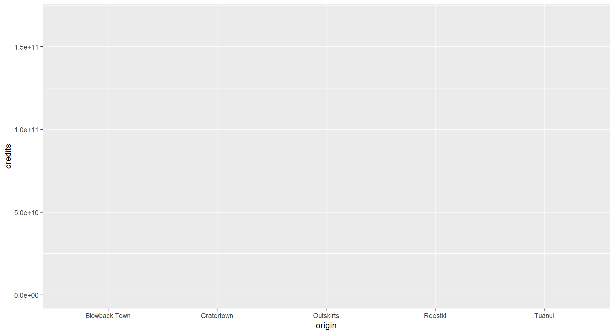
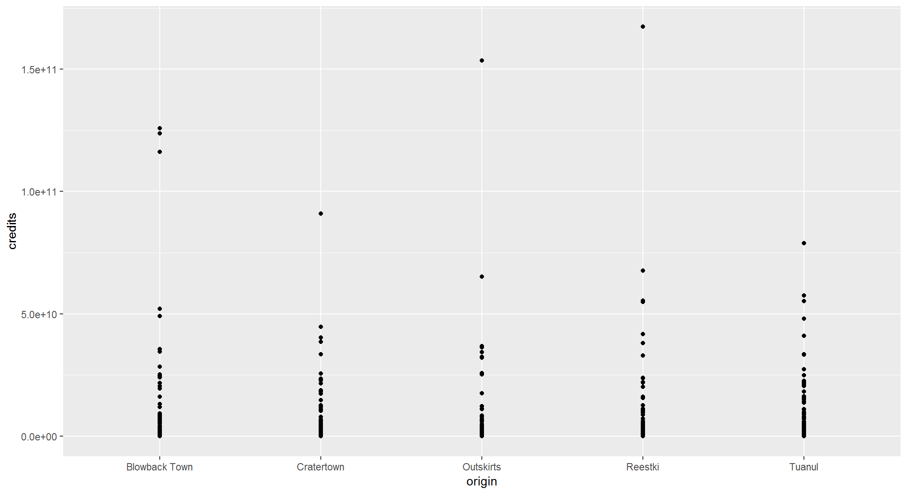
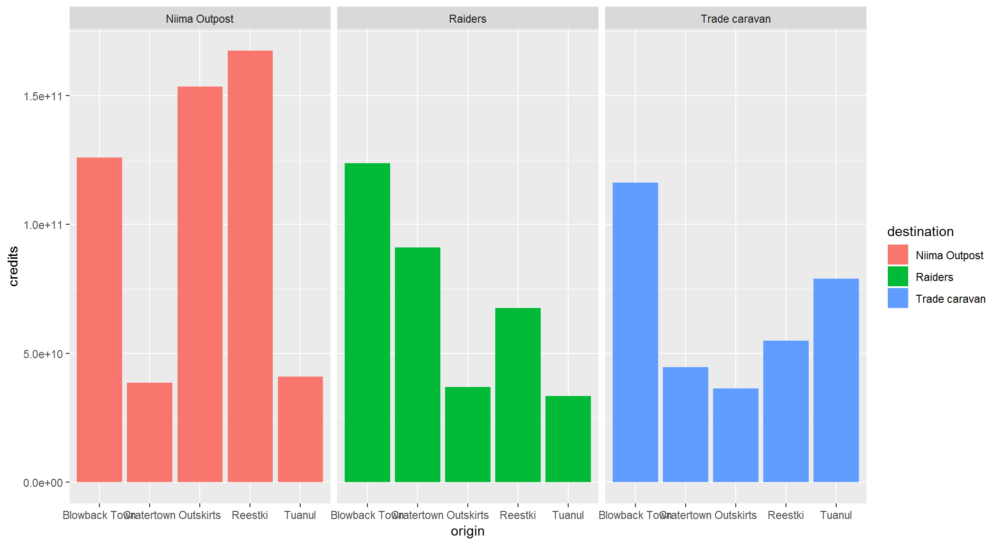
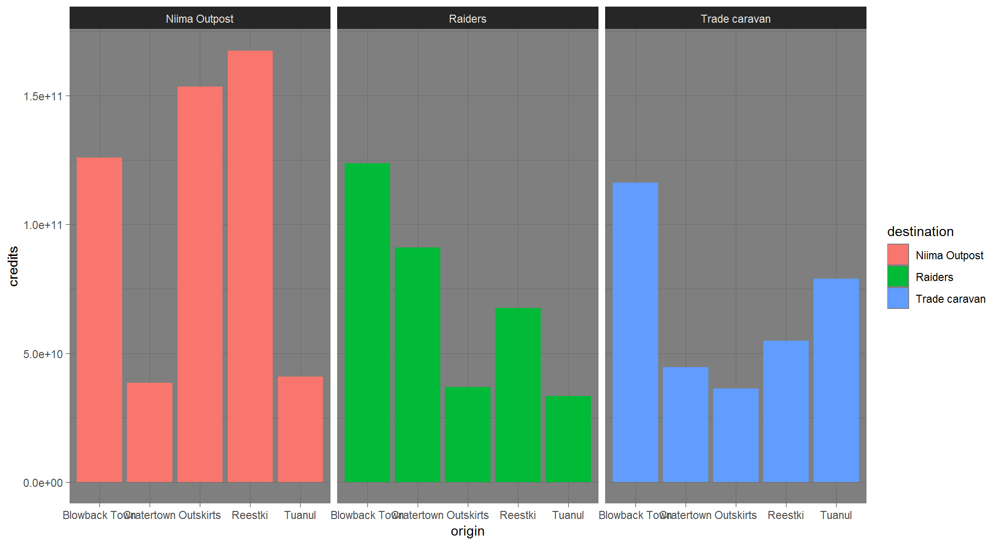
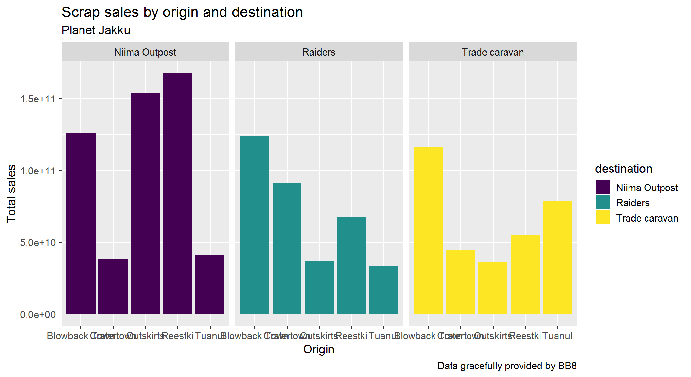
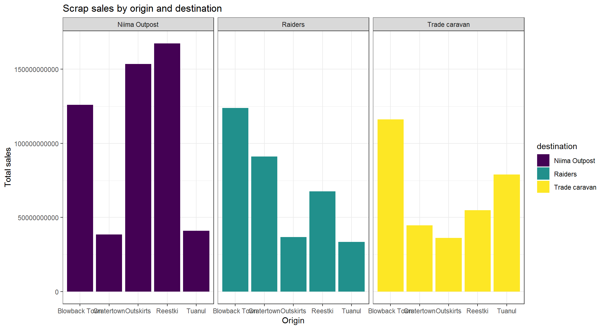

R Training | Day 4
The final day
Open your RStudio project
- Open your project folder from last week
- Double click the .Rproj file to open RStudio
Open a New script
- File > New File > R Script
- Click the floppy disk save icon
- Give it a name:
04_day.Rwill work well
Schedule
- Your
dpylrtoolbox - Conditional mutate
- Use
ifelse()for Yes/No decisions
- Use
- More plots
- New geoms
- Reference lines
- Faceting or Splitting by group
- Colors
- Titles
- Break out Finn
- Concatulations!
Porg review
The poggle of porgs has returned to help us review the dplyr functions. Follow along by downloading the porg data from the URL below.
library(readr)
porgs <- read_csv("https://itep-r.netlify.com/data/porg_data.csv")


1 | Reload the scrap data
library(readr)
library(dplyr)
library(ggplot2)
# Read in full scrap data
scrap <- read_csv("https://itep-r.netlify.com/data/starwars_scrap_jakku_full.csv")
# Read in the conversion data
convert <- read_csv("https://rtrain.netlify.com/data/conversion_table.csv")
# Join the scrap to the conversion table
scrap <- left_join(scrap, convert)
# Calculate the total price
scrap <- scrap %>%
mutate(total_pounds = amount * pounds_per_unit,
credits = total_pounds * price_per_pound)
# Calculate the price per unit
scrap <- scrap %>%
mutate(price_per_unit = credits / amount)Bad news
We’re shopping on a budget people. Sounds like Rey can’t afford anything over 500 credits per item.
Let’s add a column that labels the items as “Cheap” if the price is less than 500.
2 | ifelse()
[If this thing is true], "Do this", "Otherwise do this"
Here’s a handy ifelse statement to help you identify lightsabers.
ifelse(Lightsaber GREEN is?, Yes! Then it's Yoda's, No! Then Yoda's it is not)
Or say we wanted to label all the porgs over 60 cm as tall, and everyone else as short. Whenever we want to add a column where the value depends on the value found in another column. We can use ifelse().
Ok, say we have a list of prices for scrap and we want to flag the ones that cost less than 500 credits. How?
mutate() + ifelse() is powerful!

On the cheap
Let’s use mutate() and ifelse() to add a column named affordable to our scrap data.
# Add an affordable column
scrap <- scrap %>%
mutate(affordable = ifelse(price_per_unit < 500, "Cheap", "Expensive"))EXERCISE
Use your new column and filter() to create a new cheap_scrap table.
Pop Quiz!
What is the cheapest item?
Black box
Electrotelescope
Atomic drive
Enviro filter
Main drive
Show solution
Black box
You win!
CONGRATULATIONS of galactic proportions to you.
We now have a clean and tidy data set. If BB8 ever receives new data again, we can re-run this script and in 5 seconds we’ll have it all cleaned up.
3 | Plots with ggplot2
Plot the data, Plot the data, Plot the data

Who remembers how to plot???
The ggplot() sandwich

A ggplot has 3 ingredients.
1. The base plot
library(ggplot2)ggplot(scrap)
2. The the X, Y aesthetics
The aesthetics assign the components from the data that you want to use in the chart. These also determine the dimensions of the plot.
ggplot(scrap, aes(x = origin, y = credits)) 
3. The layers or geometries
ggplot(scrap, aes(x = origin, y = credits)) + geom_point()
Colors
Now let’s use color to show the destination of the scrap
ggplot(scrap, aes(x = origin, y = credits, color = destination)) +
geom_point()
Columns charts
Yikes! That point chart has too much detail. Let’s make a column chart and add up the sales to make it easier to understand. Note that we used fill = instead of color = below. Go ahead and try using color instead and see what happens.
ggplot(scrap, aes(x = origin, y = credits, fill = destination)) +
geom_col()We can change the position of the bars to make it easier to compare sales by destination for each origin. For that we’ll use the – drum roll please – position argument. Remember, you can use help(geom_col) to learn about the different options for that type of plot.
ggplot(scrap, aes(x = origin, y = credits, fill = destination)) +
geom_col(position = "dodge")EXERCISE
An easy way to experiment with colors is to add layers like + scale_fill_viridis() or + scale_fill_brewer() to your plot, which will link to RcolorBrewer so you can have accessible color schemes.
Try adding one of these to your column plot.
Facet wrap
Does the chart feel crowded to you? Let’s use facet wrap to put each destination in a separate chart.
ggplot(scrap, aes(x = origin, y = credits, fill = destination)) +
geom_col(position = "dodge") +
facet_wrap("destination")
It’s Finn time
Seriously, let’s pay that ransom already.
Q: Where should we go to get our 10,000 Black boxes?
Step 1: Filter the scrap data to only Black box.
cheap_scrap <- filter(scrap, ______ == "_________" )Step 2: Make a geom_col() plot showing the total pounds of Black boxes shipped to each destination.
ggplot(cheap_scrap, aes(x = ______ , y = ______ ) ) +
geom_Show code
ggplot(cheap_scrap, aes(x = destination, y = total_pounds) ) +
geom_col()Pop Quiz!
Which destination has the most pounds of the cheapest item?
Trade caravan
Niima Outpost
Raiders
Show solution
Raiders
Woop! Go get em! So long Jakku - see you never!
üòª CONCATULATIONS! üòª
Woop! Honestly, most people don’t survive this long.
Super-serious kudos to you. You have earned yourself a great award.
Stay tuned for something to arrive by snail-.
4 | Plot extras
Themes
Want to shake up the appearance of your plots? ggplot2 uses theme functions to change the general appearance of a plot. Try some different themes out. Here’s theme_dark().
ggplot(scrap, aes(x = origin, y = credits, fill = destination)) +
geom_col(position = "dodge") +
facet_wrap("destination") +
theme_dark()
Labels
You can set the axis and title labels using the labs function.
ggplot(scrap, aes(x = origin, y = credits, fill = destination)) +
geom_col(position = "dodge") +
facet_wrap("destination") +
labs(title = "Scrap sales by origin and destination",
subtitle = "Planet Jakku",
x = "Origin",
y = "Total sales",
caption = "Data gracefully provided by BB8")
Drop 1.0e+10 scientific notation
Is your boss scared of scientific notation? To hide it we can use options(scipen = 999). Note that this is a general setting in R. Once you use options(scipen = 999) in your current session you won’t have to use it again. Like loading a package, you only need to run the line once when you start RStudio.
options(scipen = 999)
ggplot(scrap, aes(x = origin, y = credits, fill = destination)) +
geom_col(position = "dodge") +
facet_wrap("destination") +
theme_bw() +
labs(title = "Scrap sales by origin and destination",
x = "Origin",
y = "Total sales")
CHALLENGE
Let’s say we don’t like printing so many zeros and want the labels to be in Millions of credits. How can you make it happen?
[Click here for a HINT]
This hint intentionally left blank. Sorry, you’re on your own.
EXERCISE
Be brave and make a boxplot. We’ve covered how to do a scatterplot with geom_point and a bar chart with geom_col, but how would you make a boxplot showing the prices at each destination? You’re on your own here. Feel free to add color ,facet_wrap, theme, and labs to your boxplots.
May the force be with you.
Save plots
You’ve hopefully made some plots you’re proud of, so let’s learn to save them so we can cherish them forever. There’s a function called ggsave to do just that. How do we ggsave our plots? HELP! Let’s type help(ggsave).
# Get help
help(ggsave)
?ggsave
# Copy and paste the r code of your favorite plot here
ggplot(data, aes()) +
.... +
....
# Save your plot to a png file of your choosing
ggsave("your_results_folder/plot_name.png")Pro-tip!
Sometimes you’ll make a plot and want to save it for later. For that, you give can your plot a name. Any name will do.
# Name the ggplot you want to save
my_plot <- ggplot(...) + geom_point(...)
# Save it!
ggsave(filename = "Save my plot here.png", plot = my_plot)Learn more about saving plots at http://stat545.com/
5 | Glossary
Table of aesthetics
| aes() |
|---|
x = |
y = |
alpha = |
fill = |
color = |
size = |
linetype = |
Table of geoms


Table of themes
You can customize the look of your plot by adding a theme() function.

Plots Q+A
- How to modify the gridlines behind your chart?
- Try the different themes at the end of this lesson:
theme_light()ortheme_bw() - Or modify the color and size with
theme(panel.grid.minor = element_line(colour = "white", size = 0.5)) - There’s even
theme_excel()
- Try the different themes at the end of this lesson:
- How do you set the x and y scale manually?
- Here is an example with a scatter plot:
ggplot() + geom_point() + xlim(beginning, end) + ylim(beginning, end) - Warning: Values above or below the limits you set will not be shown. This is another great way to lie with data.
- Here is an example with a scatter plot:
- How do you get rid of the legend if you don’t need it?
geom_point(aes(color = facility_name), show.legend = FALSE)- The R Cookbook shows a number of ways to get rid of legends.
- I only like dashed lines. How do you change the linetype to a dashed line?
geom_line(aes(color = facility_name), linetype = "dashed")- You can also try
"dotted"and"dotdash", or even"twodash"
- How many colors are there in R? How does R know
hotpinkis a color?- There is an R color cheatsheet
- As well as a list of R color names
library(viridis)provides some great default color palettes for charts and maps.- This Color web tool has palette ideas and color codes you can use in your plots
- There is an R color cheatsheet
- Keyboard shortcuts for RStudio
- There is a Shortcut cheatsheet
- In RStudio you can go to Help > Keyboard Shortcuts Help
Homeworld training

- Load one of the data sets below into R
- Porg contamination on Ahch-To
https://rtrain.netlify.com/data/porg_samples.csv
- Planet Endor air samples
https://rtrain.netlify.com/data/air_endor.csv
- Or use data from a recent project of yours
- Porg contamination on Ahch-To
Create 2 plots using the data.
If you make something really strange. Feel free to share! Consider it art and keep going.
Pro-tip!
When you add more layers using + remember to place it at the end of each line.
# This will work
ggplot(scrap, aes(x = origin, y = credits)) +
geom_point()
# So will this
ggplot(scrap, aes(x = origin, y = credits)) + geom_point()
# But this won't
ggplot(scrap, aes(x = origin, y = credits))
+ geom_point()